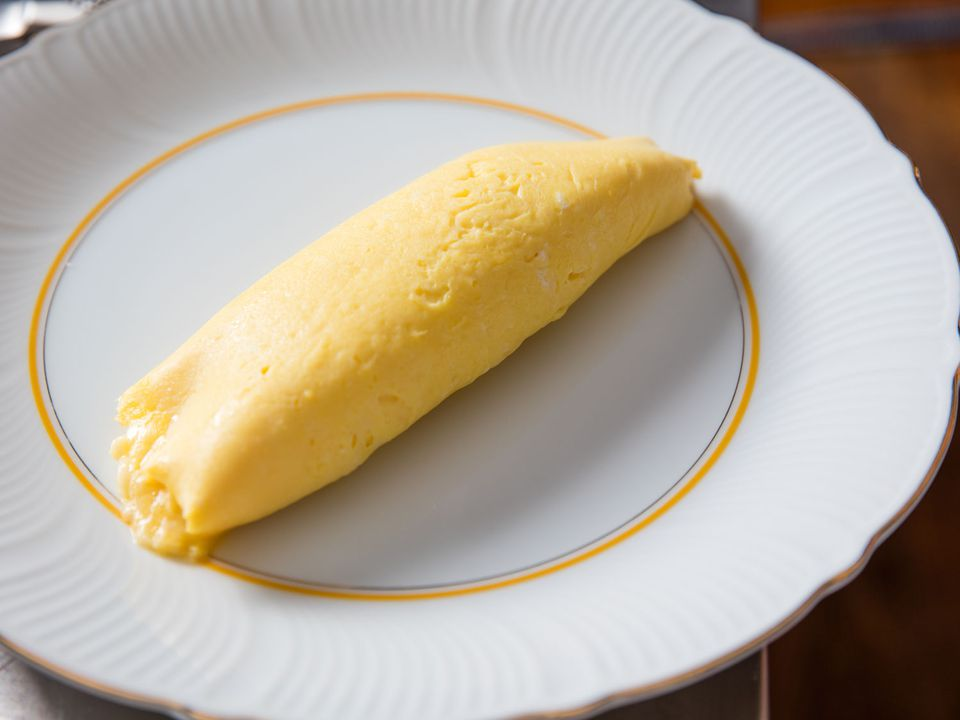

Omlette

Classic French Omlette - soft, fluffy and creamy. Can add any particular ingredients for filling/flavour but for this recipe it's just the basics.
Ingredients
- 3 Large Eggs
- Butter
- Salt and Pepper
Steps
- Mix the eggs in a bowl with a fork or a whisk.
- Heat the butter in a pan/skillet until foamy but not brown.
- Pour in the eggs and move around the pan with the back of a fork, try to distribute evenly. The eggs should be fluffy, almost like scrambled eggs.
- Add any ingredients for the filling now (Cheese and ham a classic).
- Fold the eggs over and one end and either roll into a tube or flip into a crescent shape.